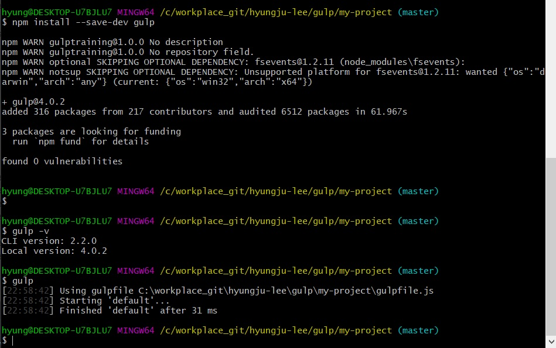

Gulp.js를 사용하는 기초 준비
- Gulp.js를 사용하는 기초 준비
-
프론트-앤드 개발 작업 자동화 빌드 시스템인 Gulp.js(http://gulpjs.com)는
Node.js 기반 환경에서 사용하는 유용한 도구입니다.
(유사한 도구로 Grunt, Brunch 등이 있지만, 필자는 Gulp.js를 더 선호합니다.)
- Gulp.js 전역적으로 설치하기
-
Gulp.js는 이전 장에서 배운 Node.js 기반의 모듈로, NPM을 이용하여 손쉽게 설치할 수 있습니다.
Gulp 패키지(https://www.npmjs.com/package/gulp)를 방문한 후
getting started guide 버튼을 사용 방법을 확인할 수 있습니다.
위 페이지는 설치부터 기본적인 사용 방법까지 단계별로 친절하게 알려줍니다.
먼저 Gulp.js를 전역적으로 설치해 보겠습니다.
다음을 참고하여 설치 코드를 복사한 후 Git Bash에서 붙여 넣어 실행합니다.
설치가 끝나면 gulp -v 명령어로 Gulp.js 버전을 확인할 수 있습니다.
위 페이지의 설명대로 설치한 후, gulp -v 명령어로 Gulp.js 버전을 확인할 수 있습니다.
